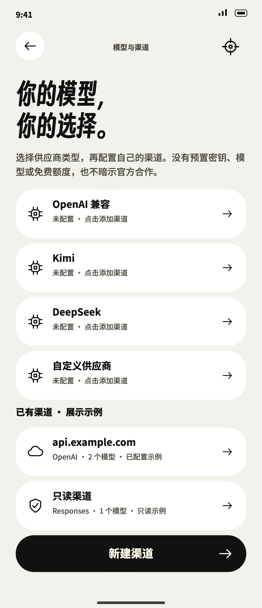

安装后怎么设置
与 App 内五屏引导相同顺序。每步只做一件事，可点「暂时跳过」。
-
01 / 05
开机 · 开始设置
安装后打开 App，黄底封面点 开始设置。

-
02 / 05
接大模型
引导第 2 屏 · 模型与渠道
选 DeepSeek 等，填 Key，保存。可跳过，但离题判断会变弱。

-
03 / 05
建主线
范围库点一个模板，写清这次要完成什么，设时间盒。

-
04 / 05
开权限
无障碍必开；悬浮窗建议开。内容识别在模型之后开。

-
05 / 05
试一次提醒
跟引导试 1 分钟，或到悬浮窗页点测试小浮窗。

进阶：我的 → 主线介入 · 刷 feed（默认前 10 分钟静默）· 微信聊天不介入。
内测建议核对
| 项 | 预期 |
|---|---|
| 模型 | 连接成功后再开内容识别 |
| 浮窗四角 | 测试小浮窗白卡四角干净 |
| 前 10 分钟 | 抖音 + 小红书合并静默 |
| 微信 | 聊天不介入；视频号才可能 |
界面速览
三列对照，与上面步骤同一套中文浅色界面。